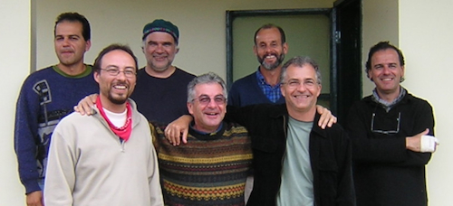

Ilha do Cardoso, SP, Brazil
Index
Previous
17 of 17
Image 17
Caption: Professors at the 2004 Frugivory and Seed Dispersal course. Left to right: Marco Aurelio Pizo, Mauro Galetti, Rodrigo Medel, Wilson Spironello, Wesley Silva, Regino Zamora, and Pedro Jordano
